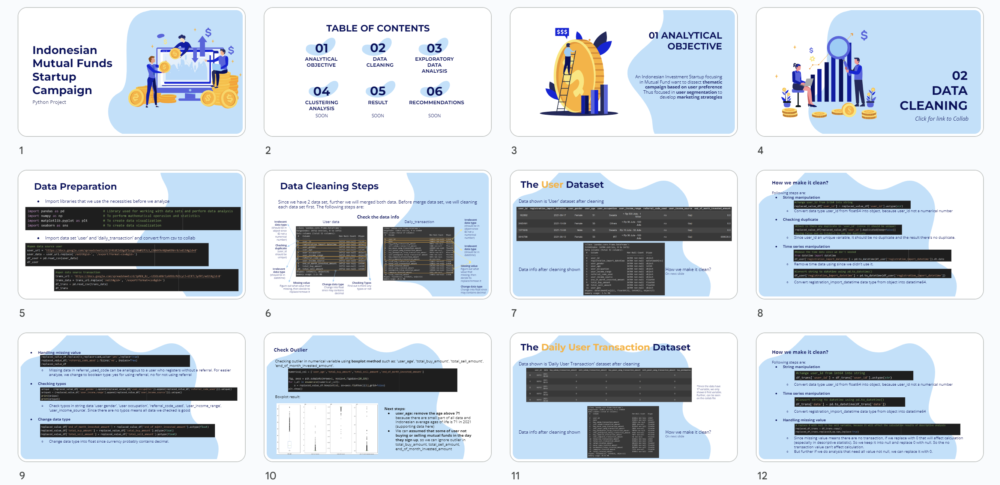

Python: Indonesian Mutual Fund Start-up Campaign
Category:
Financial Technology
Background:
An Indonesian Investment Startup focusing in Mutual Fund want to dissect thematic campaign based on user preference to develop marketing strategies.
Also finding which campaign is the most profitable since the marketing team have limited budget.
Analysis Work Path:
- Data Cleaning
- Scaller
- Elbow Method
- Silhouetee Method
- Clustering Analysis
- Correlation Analysis
- Logistic Regression
- Benefit-Cost Analysis
- Insights and Recommendations